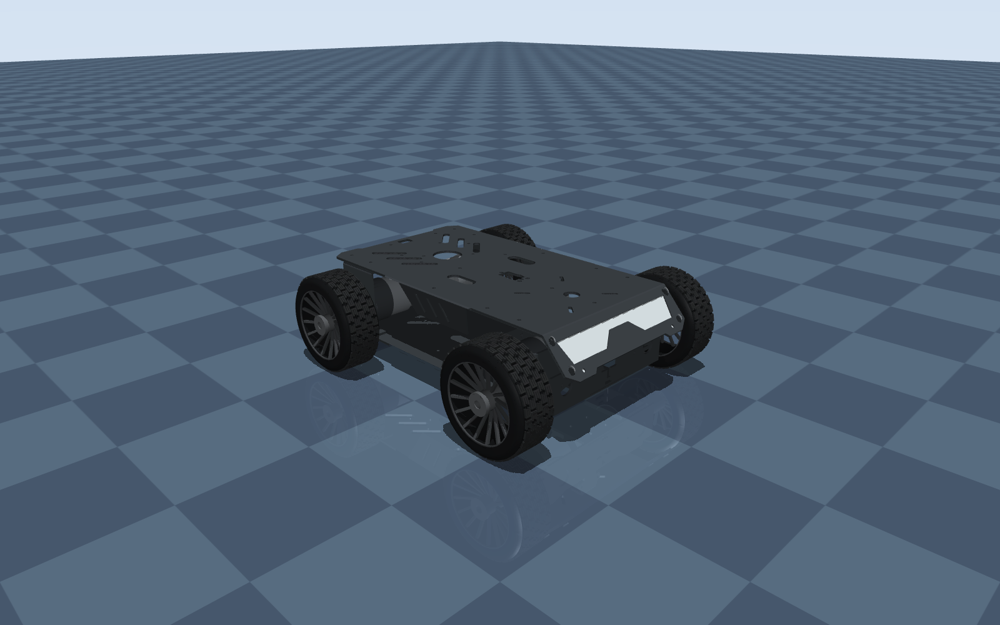

LOCOMOTION / SIMULATION STUDY
Learning to find
stable ground.
Reinforcement learning for Unitree Go2 locomotion on uneven terrain, with body-stability and path-tracking evaluation in Isaac Gym.
- Isaac Gym
- PyTorch
- Reinforcement learning